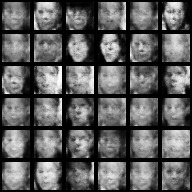
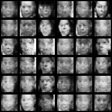
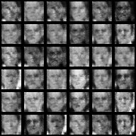
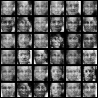
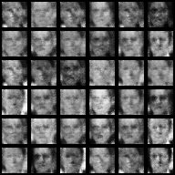
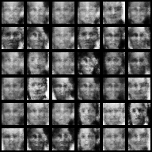

Introduction
Radford's paper Unsupervised Representation Learning with Deep Convolutional Generative Adversarial Networks lays the framework and architecture for building a deep convolutional generative adversarial network (DCGAN). Convolutional layers have been great for image based deep learning regarding tasks like image classification in the field of computer vision. Additionally, DCGAN models can improve stability during training so that we hopefully do not encounter issues like mode collapse. Our goal is to build a DCGAN that can generate synthetic facial images. We will follow the steps Radford used in his paper to build out our model.
Environment Setup
Below we have a description of each library we will use. Please click the links under installation and documentation to install and learn more about each library.
- Programming Language:
- Python 3 - Python is a general-purpose interpreted, interactive, object-oriented, and high-level programming language. We will be using version 3.x. This can be obtained from the official Python website or through the Anaconda distribution, which contains python 3 and many useful scientific computing libraries.
- Python Installation: Python Installation or Anaconda Installation
- Pip Installation: Pip Installation
- Libraries:
- TensorFlow - TensorFlow is an open-source software for machine intelligence. It is currently a very popular choice for developing deep learning modles.
- Installation: TensorFlow Installation
- Documentation: TensorFlow Documentation
- Numpy - Numpy is a package for scientific computing that contains many useful operations for a multi-dimensional data structure called an nd array (np array).
- Installation: Numpy Installation
- Documentation: Numpy Documentation
- Matplotlib - Matplotlib, from the creators of numpy, is a plotting library that allows for custom charts like scatter plots, bar charts, line graphs, etc.
- Installation: Matplotlib Installation
- Documentation: Matplotlib Documentation
- Scipy - Scipy, from the creators of numpy, is an alternate library for mathematics, science, and engineering.
- Installation: Scipy Installation
- Documentation: Scipy Documentation
- Sklearn - Sklearn has efficient tools for data mining, analysis, and machine learning. Installation can be found here or by using pip install sklearn. Documentation can be found here.
- Installation: Sklearn Installation
- Documentation: Sklearn Documentation
- PIL - PIL, short for Python Imaging Library, is a powerful library to handle and manipulate images.
- Installation: PIL Installation
- Documentation: PIL Documentation
- Random - Random allows us to create pseudo-random number generators for various distributions.
- Installation: Installed with Python
- Documentation: Random Documentation
Once TensorFlow is installed you will have access to TF-Slim, a lightweight library for defining, training, and evaluating complex models in TensorFlow. This makes writing TensorFlow code easier and quicker while still allowing us to see the fine details of our model and its layers.
Data
We will be using data from the Labeled Faces in the Wild (LFW) database. This database consists of more than 13,000 images of faces collected from the web. Additionally, each face has been labeled with the name of the person pictured. The data can be downloaded from here. Additionally, we can access the datasets module in sklearn and pull the data using the fetch_lfw_people function. This will return our data in a dataset object, which is a dictionary like structure. Let us now proceed to write a class and a few fuctions to read in and format our data.
We start by creating a class called Data_Set. In this class we take in our vector of images. In our init method we will calculate the number of samples we have in the images vector, normalize the images, and set the number of epochs completed and index of the epochs to 0. We will need the number epochs completed and the index of the epochs when we train our generative adversarial network. We will also create some getters for the number of images, number of samples, and the number of epochs completed. Finally, we will create a method called batch_next. This takes in a batch size and will perform a sequential pull of this batch size for our training data. Our class is as follows:
class Data_Set(object): #Parameter Initialization def __init__(self, images): self.num_examples = images.shape[0] self.images = np.multiply(images.astype(np.float32), 1.0 / 255.0) self.epochs_completed = 0 self.index_in_epoch = 0 #Getters/Setters for our class def images(self): return self.images def num_examples(self): return self.num_examples def epochs_completed(self): return self.epochs_completed #Return the next batch, used in model training def batch_next(self, batch_size): start = self.index_in_epoch self.index_in_epoch += batch_size if self.index_in_epoch > self.num_examples: self.epochs_completed += 1 perm = np.arange(self.num_examples) np.random.shuffle(perm) self.images = self.images[perm] start = 0 self.index_in_epoch = batch_size end = self.index_in_epoch return self.images[start:end], None
Next, we create a function called pull_data(). This function creates an empty Data_Sets object which we create inside the function and then uses the fetch_lfw_people method from the sklearn datasets module. Within fetch_lfw_people module we use the following parameters:
- Slice: This provides a custom 2D slice in terms of (height, width) which allows us to extract a specific part of each of the JPEG images. We want to extract the faces in each image which corresponds to slice_ = (slice(70, 195, None), slice(70, 195, None)).
- Resize: The Ratio used to resize the each facial picture. This value is specified as a float and defaults to 0.5. The original images are 250 x 250 pixels, but the default slice and resize arguments reduce them to 62 x 74. We, however, want our our images to be 28 x 28. To do so we can set the resize = 0.224.
Once we call the fetch_lft_people module we obtain a dataset object. We can then use the .data function to extract a vector of the facial images. We can then create the Data_Set object, which we created in the class above, by passing in our vector of the facial images. We create our pull_data function as follows:
def pull_data(): class Data_Sets(object): pass data_sets = Data_Sets() #Get LFW people data and resize it to 28 x 28, slice for faces lfw_people = fetch_lfw_people(slice_=(slice(70, 195, None), slice(70, 195, None)), resize=0.224) #Create Data_Set object d = lfw_people.data data_sets.train = Data_Set(d) return data_sets
We can now obtain our data by doing the following:
data = pull_data()
We can check the size of our data as follows:
print(data.train.images.shape) >>> (13233, 784)
Above, we see that we have 13,233 samples where each sample is a vector of length 784. We see that this is a flattened 28 x 28 vector as 28 x 28 = 784.
Now that we have our data, let us see what a sample of it looks like. To do so we write a function called display_images which takes in our data and some indices we want to display from the data. Here we use data.train.images to obtain an ndarray of normalized image values. We loop over our indices and look at the image inside data.train.images of that particular index and unnormalize it. We also reshape it into a 28 x 28 image and then use the python library PIL's imshow function to show the image. We do this for every image in the list of indices we specify. Our function is as follows:
def display_images(data,indices): #Obtain the images inside data im_data = data.train.images for i in range(len(indices)): #Set image sizing %matplotlib inline plt.figure(figsize=(1,1)) #Unnormalize the image and reshape it im = Image.fromarray(np.multiply(im_data[indices[i]],255.0).reshape(28,28)) #Show the image p = plt.imshow(im) plt.show(p) display_images(data,[4,45,599])
Once we call display_images(data,[4,45,599]) above, we see the following the $4^{\text{th}}, 45^{\text{th}}, \text{and}\; 599^{\text{th}}$ images in our dataset. The images are as follows:
DCGAN architecture:
Let us now briefly talk about Deep Convolutional Generative Adversarial Networks so that we have some background before we implement one. In 2016 Alec Radford, Luke Metz, and Soumith Chintala published Unsupervised Representation Learning With Deep Convolutional Generative Adversarial Networks. In computer vision tasks, convolutional networks and supervised learning has had great success and popularity. However, unsupervised learning with convolutional neural networks has recieved less attention. Deep Convolutional Generative Adversarial Networks (DCGANs) demonstrate that they are a strong candidate for unsupervised learning. The generator/discriminator pair learns a hierarchy of representations from object parts to scenes in both the generator and discriminator. Since we are working with facial image data, implementing a DCGAN is a great choice. The architecture from the paper, which we will follow, is described as:
- Replace any pooling layers with strided convolutions (discriminator) and fractional-strided convolutions (generator)
- Use batchnorm in both the generator and the discriminator
- Remove fully connected hidden layers for deeper architectures
- Use ReLU activation in generator for all layers except for the output, which uses Tanh
- Use LeakyReLU activation in the discriminator for all layers
Leaky Rectified Linear Unit
Before we move on to creating our generator and discriminator let us first construct a leaky rectified linear unit layer. When we use GANs we want to avoid sparse gradients to prevent suffering in terms of GAN stability. This means we should stear clear from ReLU and MaxPool layers. Instead we can use this leaky rectified linear unit layer. Let us create a function called lrelu that takes in x, a leak value, and the name "lrelu". Inside we use tf.variable_scope("lrelu") and set f1 to 0.5 * (1 + leak) and f2 to 0.5 * (1 - leak). We then return f1 * x + f2 * abs(x). We will use the leaky rectified linear unit layer in our discriminator as noted in the DCGAN architecture above. We build our function as follows:
def lrelu(x, leak=0.2, name="lrelu"): with tf.variable_scope(name): f1 = 0.5 * (1 + leak) f2 = 0.5 * (1 - leak) return f1 * x + f2 * abs(x)
Generator
Let us now construct our generator. The architecture looks as follows:
Above we see that we have our z input (uniformly distributed random numbers). We will create four deconvolutional layers. Each layer will have batch normalization. The first three layers will use the rectified linear unit (RELU) activation function, while the fourth deconvolutional layer will use the tanh activation function as specified in the paper. We will then output an image G(z) with dimensions 32 x 32. Our architecure for the generator will look as follows:
- Fully Connected Layer
- Reshape
- Deconvolutional Layer 1 - batch normalization, relu activation
- Deconvolutional Layer 2 - batch normalization, relu activation
- Deconvolutional Layer 3 - batch normalization, relu activation
- Deconvolutional Layer 4 - batch normalization, tanh activation
All in all, our generator will take in a vector consisting of random numbers from a uniform distribution, pass through four fractionally-strided convolutions (called deconvolutions), and then output an image with shape 32 x 32. We construct our generator model, called generator, with an input called z_shp. This is the shape of our z in the above architecture descrption. Our function is as follows:
def generator(z_shp): #Commonly Used Variables PADDING = "SAME" STRIDE = [2,2] #Our first dense (fully connected) layer g1_dense = slim.fully_connected(z_shp,4*4*256,normalizer_fn=slim.batch_norm,\ activation_fn=tf.nn.relu,scope='g1_dense',weights_initializer=initializer) #Reshape g1_dense_reshape = tf.reshape(g1_dense,[-1,4,4,256]) #Dconv Layer 1, batch normalization, relu activation g2_dconv = slim.convolution2d_transpose(\ g1_dense_reshape,num_outputs=64,kernel_size=[5,5],stride=STRIDE,\ padding=PADDING,normalizer_fn=slim.batch_norm,\ activation_fn=tf.nn.relu,scope='g2_dconv', weights_initializer=initializer) #Dconv Layer 2, batch normalization, relu activation g3_dconv = slim.convolution2d_transpose(\ g2_dconv,num_outputs=32,kernel_size=[5,5],stride=STRIDE,\ padding=PADDING,normalizer_fn=slim.batch_norm,\ activation_fn=tf.nn.relu,scope='g3_dconv', weights_initializer=initializer) #Dconv Layer 3, batch normalization, relu activation g4_dconv = slim.convolution2d_transpose(\ g3_dconv,num_outputs=16,kernel_size=[5,5],stride=STRIDE,\ padding=PADDING,normalizer_fn=slim.batch_norm,\ activation_fn=tf.nn.relu,scope='g4_dconv', weights_initializer=initializer) #Dconv Layer 4, batch normalization, tanh activation g5_dconv = slim.convolution2d_transpose(\ g4_dconv,num_outputs=1,kernel_size=[32,32],padding=PADDING,\ biases_initializer=None,activation_fn=tf.nn.tanh,\ scope='g5_dconv', weights_initializer=initializer) return g5_dconv
Discriminator
Now that we have our generator to generate synthetic images, let us now create our discriminator. Our discriminator achitecture is as follows:
Here we will input a 32 x 32 image and pass it through three convolutional layers that have a leaky rectified linear unit activation. We will then pass through a fully connected layer with a sigmoid activation function and will return a single valued probability representing whether the generated image is a "real" image or a "fake" image. We create the discriminator as follows:
def discriminator(bottom, reuse=False): PADDING = "SAME" STRIDE = [2,2] #Conv Layer 1, No batch normalization, leaky relu activation d1_conv = slim.convolution2d(bottom,16,[4,4],stride=STRIDE,padding=PADDING,\ biases_initializer=None,activation_fn=lrelu,\ reuse=reuse,scope='d1_conv',weights_initializer=initializer) #Conv Layer 2, batch normalization, leaky relu activation d2_conv = slim.convolution2d(d1_conv,32,[4,4],stride=STRIDE,padding=PADDING,\ normalizer_fn=slim.batch_norm,activation_fn=lrelu,\ reuse=reuse,scope='d2_conv', weights_initializer=initializer) #Conv Layer 3, batch normalization, leaky relu activation d3_conv = slim.convolution2d(d2_conv,64,[4,4],stride=STRIDE,padding=PADDING,\ normalizer_fn=slim.batch_norm,activation_fn=lrelu,\ reuse=reuse,scope='d3_conv',weights_initializer=initializer) #Dense Layer (Fully connected), sigmoid activation d4_dense = slim.fully_connected(slim.flatten(d3_conv),1,activation_fn=tf.nn.sigmoid,\ reuse=reuse,scope='d4_output', weights_initializer=initializer) return d4_dense
DCGAN Construction
Now that we have our generator and discriminator we can now create our deep convolutional generative adversarial network. We will create a variable called z_size which will be the size of the z vector used for our generator. We will then initialize all weights for our network. We do so here because we want to initialize the same weights. If we pass this into each weights_initializer parameter in our tf.slim code above we might be assigned different weights. We then create an input for the generator and discriminator and create the images for the random vectors and probabilites for the real images. We can then create the optimization objective and then apply gradient descent. We create our DCGAN model as follows:
tf.reset_default_graph() z_size = 100 #Initialize Network weights initializer = tf.truncated_normal_initializer(stddev=0.02) #Input for Generator z_in = tf.placeholder(shape=[None,z_size],dtype=tf.float32) #Input for Discriminator real_in = tf.placeholder(shape=[None,32,32,1],dtype=tf.float32) #Creating Images for ranom vectors of size z_in Gz = generator(z_in) #Probabilities for real images Dx = discriminator(real_in) #Probabilities for generator images Dg = discriminator(Gz,reuse=True) #Optimize the discriminator and the generator d_log1 = tf.log(Dx) d_log2 = tf.log(1.-Dg) g_log = tf.log(Dg) d_loss = -tf.reduce_mean(d_log1 + d_log2) g_loss = -tf.reduce_mean(g_log) tvars = tf.trainable_variables() #Use the Adam Optimizers for discriminator and generator LR = 0.0002 BTA = 0.5 trainerD = tf.train.AdamOptimizer(learning_rate=LR,beta1=BTA) trainerG = tf.train.AdamOptimizer(learning_rate=LR,beta1=BTA) #Gradients for discriminator and generator gradients_discriminator = trainerD.compute_gradients(d_loss,tvars[9:]) gradients_generator = trainerG.compute_gradients(g_loss,tvars[0:9]) #Apply the gradients update_D = trainerD.apply_gradients(gradients_discriminator) update_G = trainerG.apply_gradients(gradients_generator)
Saving Generated Images
Our GAN will create synthetic images during training. Let us now write a function called save_generated_images to save our generated images. Here we will take in a vector of images, a size, and a path to save them. We will create a vector of zeros that is of size image height x width multiplied by the size we pass in (for instance size = [6,6]). We will then extract the images we want to save and return a block of images (6 x 6) so we can see how our model improves over time. We do so as follows:
def save_generated_images(images,size,image_path): images = (images+1.)/2. height = images.shape[1] width = images.shape[2] img = np.zeros((height * size[0], width * size[1])) for idx, image in enumerate(images): a = idx % size[1] b = idx // size[1] img[b*height:b*height+height, a*width:a*width+width] = image sve = scipy.misc.imsave(image_path,img) return sve
DCGAN Training
Let us now train our network on our machine ( I am using a retina macbook pro with 8gb of ram). Since we are not using a GPU right now (we will do so in the next section), we will use 5000 iterations and a batch_size of 128. Here, we will choose a sample batch from our facial image data using the class function batch_next and shape it into a 32 x 32 image. We will then generate a random batch, z, and update the generator and discriminator. Every 15 iterations we will calculate our loss for both the generator and discriminator and plot them on an updating plot. We will also save some sample generated images (36 sample generated images in a 6 x 6 grid) from the generator at this stage. We will save these images into a directory called facial_figs. Every 1000 iterations we will save our model attributes into a directory called facial_models. We train our model as follows:
#size setups batch_size = 128 iterations = 5000 #tf setup init = tf.global_variables_initializer() saver = tf.train.Saver() #plot setup plt_g = np.array([]) plt_d = np.array([]) plt_x = np.array([]) with tf.Session() as sess: sess.run(init) for i in range(iterations): print("Progress: ",i,"/",iterations) #Choose sample batch from data xs,xt = data.train.batch_next(batch_size) #Make sure our data is between (-1,1) xs = np.lib.pad(((np.reshape(xs,[batch_size,28,28,1]) - 0.5) * 2.0),((0,0),(2,2),(2,2),(0,0)),'constant', constant_values=(-1, -1)) #Updating Discriminator Once and Generator Twice random_z_batch = np.random.uniform(-1.0,1.0,size=[batch_size,z_size]).astype(np.float32) #Generate a random z batch _,dLoss = sess.run([update_D,d_loss],feed_dict={z_in:random_z_batch,real_in:xs}) _,gLoss = sess.run([update_G,g_loss],feed_dict={z_in:random_z_batch}) _,gLoss = sess.run([update_G,g_loss],feed_dict={z_in:random_z_batch}) #Training Stats if i % 15 == 0: #Plot our generator loss and discriminator loss print("Gen Loss: " + str(gLoss) + " Disc Loss: " + str(dLoss)) plt_g = np.append(plt_g,float(gLoss)) plt_d = np.append(plt_d,float(dLoss)) plt_x = np.append(plt_x,i) plt.gca().cla() plt.plot(plt_x,plt_g,'r--',label='gen loss') plt.plot(plt_x,plt_d,'g--',label='disc loss') plt.xlabel('iteration') plt.ylabel('loss') plt.title('Loss vs iteration') plt.legend() display.clear_output(wait=True) display.display(plt.gcf()) #Get sample images from the generator z2 = np.random.uniform(-1.0,1.0,size=[batch_size,z_size]).astype(np.float32) newZ = sess.run(Gz,feed_dict={z_in:z2}) #Save our generated images if not os.path.exists('./facial_figs'): os.makedirs('./facial_figs') save_generated_images(np.reshape(newZ[0:36],[36,32,32]),[6,6],'./facial_figs/fig'+str(i)+'.png') #Save our model every 1000 iterations if i % 1000 == 0 and i != 0: if not os.path.exists('./facial_models'): os.makedirs('./facial_models') saver.save(sess,'./facial_models/model-'+str(i)+'.cptk') print("Saved Model")
The code above should take approximately 8 hours using the CPU on a retina Macbook Pro with 8gb of ram. When the model finished our plot of the loss function against the number of iterations looked as follows:
We see that our generator's loss was initially lower than the discriminator's loss meaning the generator was generating images that was fooling the discriminator. However, the discriminator soon learned to catch these fake images and it's loss dropped lower than the discriminators. Soon, the generator started generating better quality images that fooled the discriminator. We see that the generator and discriminator loss functions started to stabalize at about 1000 iterations with the generator's loss being about 0.65 and the discriminator's loss being about 1.40.
DCGAN Generator Image Samples
Below are some sample images that were generated during training:

 

All of the above images were from iterations 4000 - 5000. We can clearly see that facial images have started to form and we see clearly defined facial features like eyes, nose, mouth. The images are still a little blurry, but we should expect this after a low number of iterations. Let's take a look at some of the earlier images generated earlier in the training process:
 



We see that our generator started off generating low quality pixelated images, but started to generate images that looked more and more like faces, hence fooling the discriminator. We can find a timelapse gif of the training process below:

Query Our DCGAN
Now that we have a trained model, where we can clearly see facial images, let us write a function to query new facial images. We first load in our saved model in the facial_models. Then, we pass this vector into the generator and generate a set of 6 x 6 images, which will be saved in a directory called synthetic_faces. We wrap the random number process and image generation in a for loop so we can repeat this k times. Our code is as follows:
batch_size_sample = 36 num_img = 10 init = tf.initialize_all_variables() saver = tf.train.Saver() with tf.Session() as sess: sess.run(init) #Load previos Model and weights ckpt = tf.train.get_checkpoint_state('./facial_models') saver.restore(sess,ckpt.model_checkpoint_path) #Generate 10 synthetic facial iamges for k in range(num_img): #Generate random uniform to generate synthetic images rand_z = np.random.uniform(-1.0,1.0,size=[batch_size_sample,z_size]).astype(np.float32) newZ = sess.run(Gz,feed_dict={z_in:rand_z}) #Save synthetic image if not os.path.exists('./synthetic_faces'): os.makedirs('./synthetic_faces') save_generated_images(np.reshape(newZ[0:batch_size_sample],[36,32,32]),[6,6],'synthetic_faces/synthetic_face'+str(k)+'.png')
Let us now take a look at some of the images we generated:
Again, we can clearly see facial images produced by our generator.
DCGAN On A GPU
We see that we had good success in generating facial images by training 5,000 iterations over 8 hours on our machine's CPU. Using a GPU will allow us to train many more iterations in much less time. Amazon Web Services (AWS) offers a low cost hourly charge to run code on their powerful machines. We will make use of the p2.8xlarge machine for training our model. This machine has 8 GPUs, 32 vCPU, 488 GiB of memory, 19968 parallel processing cores, 96 GiB of GPU memory, and 10 Gigabit network performance. This is a very powerful machine and at the cost of $\$7.20$ per hour we can train for 50,000 iterations in about 85 minutes. This might sound expensive, but we are going to use AWS spot pricing. Here, the current spot price (always changing) is $\$0.905$ per hour. So, for less than $\$2$ we can train our DCGAN model on a high powered machine packed with multiple GPUs for 50,000 iterations. To do so, we need to enable our TensorFlow code to use a GPU. Now, when we create our DCGAN model by combining the generator and discriminator we wrote, we need to set DEVICE = '/gpu:0' and wrap our code inside with tf.device(DEVIDE). We make the change as follows:
DEVICE='/gpu:0' with tf.device(DEVICE): tf.reset_default_graph() z_size = 100 #Initialize Network weights initializer = tf.truncated_normal_initializer(stddev=0.02) #Input for Generator z_in = tf.placeholder(shape=[None,z_size],dtype=tf.float32) #Input for Discriminator real_in = tf.placeholder(shape=[None,32,32,1],dtype=tf.float32) #Creating Images for ranom vectors of size z_in Gz = generator(z_in) #Probabilities for real images Dx = discriminator(real_in) #Probabilities for generator images Dg = discriminator(Gz,reuse=True) #Optimize the discriminator and the generator d_log1 = tf.log(Dx) d_log2 = tf.log(1.-Dg) g_log = tf.log(Dg) d_loss = -tf.reduce_mean(d_log1 + d_log2) g_loss = -tf.reduce_mean(g_log) tvars = tf.trainable_variables() #Use the Adam Optimizers for discriminator and generator LR = 0.0002 BTA = 0.5 trainerD = tf.train.AdamOptimizer(learning_rate=LR,beta1=BTA) trainerG = tf.train.AdamOptimizer(learning_rate=LR,beta1=BTA) #Gradients for discriminator and generator gradients_discriminator = trainerD.compute_gradients(d_loss,tvars[9:]) gradients_generator = trainerG.compute_gradients(g_loss,tvars[0:9]) #Apply the gradients update_D = trainerD.apply_gradients(gradients_discriminator) update_G = trainerG.apply_gradients(gradients_generator)
We can now apply our previous code, shown below, to start training the model on the AWS instance. We will save all generated images and model parameters to the directories gpu_facial_figs and gpu_facial_models.
#size setups batch_size = 128 iterations = 50000 #tf setup init = tf.global_variables_initializer() saver = tf.train.Saver() #plot setup plt_g = np.array([]) plt_d = np.array([]) plt_x = np.array([]) with tf.Session() as sess: sess.run(init) for i in range(iterations): print("Progress: ",i,"/",iterations) #Choose sample batch from data xs,xt = data.train.batch_next(batch_size) #Make sure our data is between (-1,1) xs = np.lib.pad(((np.reshape(xs,[batch_size,28,28,1]) - 0.5) * 2.0),((0,0),(2,2),(2,2),(0,0)),'constant', constant_values=(-1, -1)) #Updating Discriminator Once and Generator Twice random_z_batch = np.random.uniform(-1.0,1.0,size=[batch_size,z_size]).astype(np.float32) #Generate a random z batch _,dLoss = sess.run([update_D,d_loss],feed_dict={z_in:random_z_batch,real_in:xs}) _,gLoss = sess.run([update_G,g_loss],feed_dict={z_in:random_z_batch}) _,gLoss = sess.run([update_G,g_loss],feed_dict={z_in:random_z_batch}) #Training Stats if i % 15 == 0: #Plot our generator loss and discriminator loss print("Gen Loss: " + str(gLoss) + " Disc Loss: " + str(dLoss)) plt_g = np.append(plt_g,float(gLoss)) plt_d = np.append(plt_d,float(dLoss)) plt_x = np.append(plt_x,i) plt.gca().cla() plt.plot(plt_x,plt_g,'r--',label='gen loss') plt.plot(plt_x,plt_d,'g--',label='disc loss') plt.xlabel('iteration') plt.ylabel('loss') plt.title('Loss vs iteration') plt.legend() display.clear_output(wait=True) display.display(plt.gcf()) #Get sample images from the generator z2 = np.random.uniform(-1.0,1.0,size=[batch_size,z_size]).astype(np.float32) newZ = sess.run(Gz,feed_dict={z_in:z2}) #Save our generated images if not os.path.exists('./gpu_facial_figs'): os.makedirs('./gpu_facial_figs') save_generated_images(np.reshape(newZ[0:36],[36,32,32]),[6,6],'./gpu_facial_figs/fig'+str(i)+'.png') #Save our model every 1000 iterations if i % 1000 == 0 and i != 0: if not os.path.exists('./gpu_facial_models'): os.makedirs('./gpu_facial_models') saver.save(sess,'./gpu_facial_models/model-'+str(i)+'.cptk') print("Saved Model")
Now, we have over 50,000 generated images during training. Let us take a look at a couple of the images generated during training:

Let us also look at a sample video of the training process. We only show a sample as there are too many images and the video file becomes too large to upload:
After training on the GPU for 50,000 iterations, our images look much more realistic.
Code
We have successfully built a DCGAN model and generated synthetic facial images on both a CPU and GPU. All code for this tutorial is available for download in an iPython format here